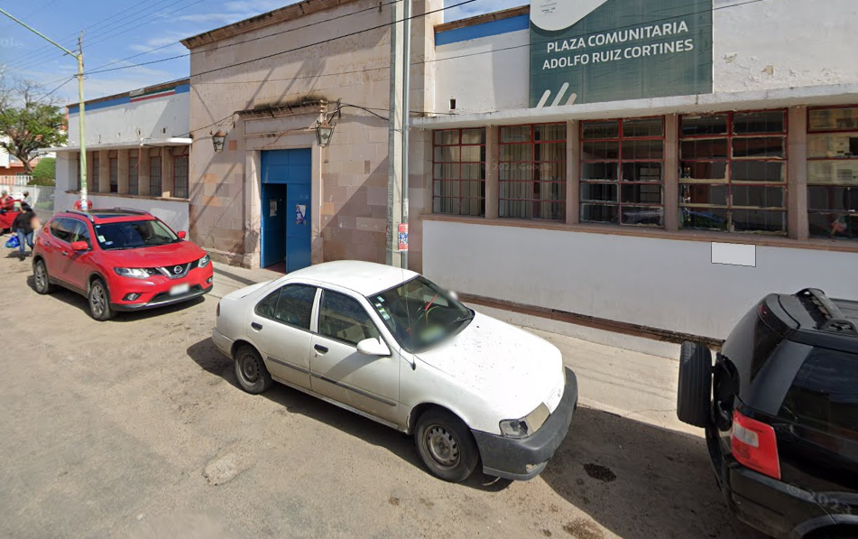
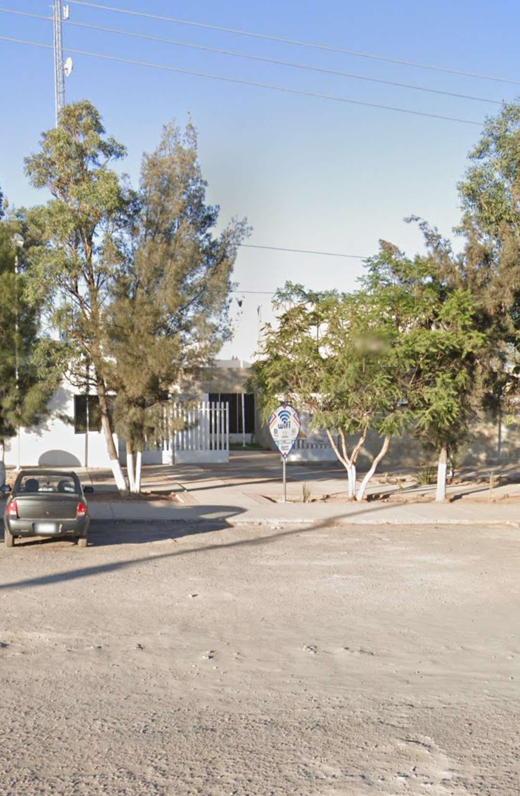
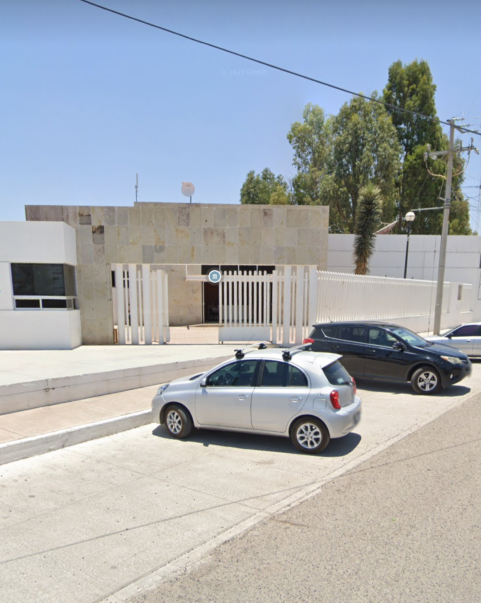
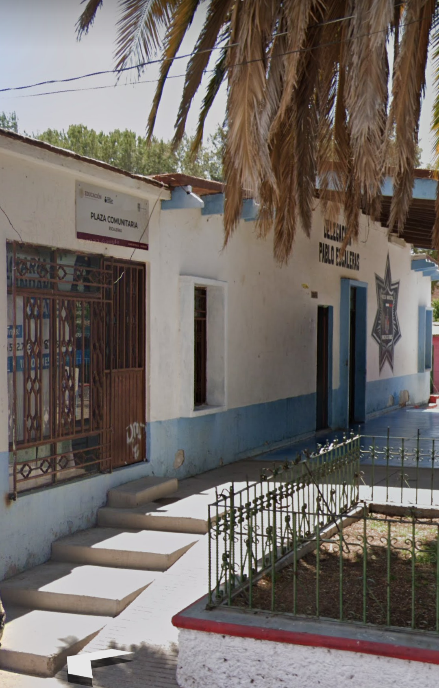

UBICACIÓN DE PLAZAS COMUNITARIAS
Coordinación zona 05
¿Qué es una plaza comunitaria?
Las Plazas Comunitarias son espacios educativos en donde se atiende prioritariamente a los jóvenes y adultos que no han concluido su educación básica, ofreciendo servicios educativos, además de acercar a estas personas al uso de nuevas tecnologías de información y comunicación. En Aguascalientes contamos con mas de 60 espacios en los que se ofrece además de la educación básica, formación para el trabajo, acceso a nuevas tecnologías, sesiones de viedoanálisis, etc.

Adolfo Ruiz Cortines, Rincón de Romos
Calle Insurgentes Ote 17, Centro Histórico, 20400 Rincón de Romos, Ags
Casa del Bien Común Rincón de Romos
CALLE PLUTARCO ELIAS CALLES ESQ MIGUEL HIDALGO, FRACC. HACIENDAS SAN JOSÉ DEL RINCÓN, C.P. 20451

Casa del Bien Común Tepezala
AV. 12 DE DICIEMBRE S/N, UNIDAD DEPORTIVA OTTO GRANADOS ROLDAN, ZONA CENTRO C.P. 20607

Casa del Bien Común Cosio
PROL. ESTEBAN CASTORENA S/N, A UN COSTADO DE SEGURIDAD PUBLICA, COL. POPULAR C.P. 20467
